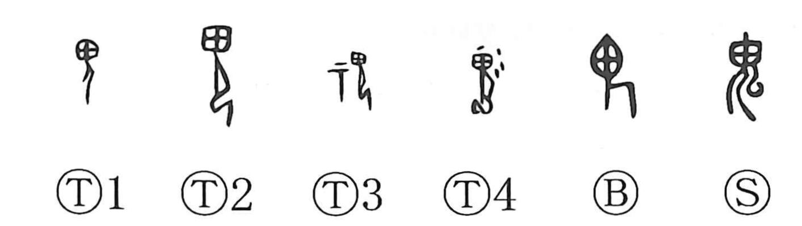

鬼

Kun: oni | On: ki
ghost ・ demon
Explanation
鬼 pictures a human spirit with an enlarged head and a bent or crouching body. People were thought to become 鬼 after death; the disproportionate head distinguishes the dead presence from an ordinary living person.
The small element later written 厶 was added to the older figure and probably represents cloud vapour. The same conception becomes explicit in 魂, where 云 gives the drifting, cloud-like soul. 魄 instead relates the dead to the pale skull and bodily remains.
鬼 can name a wandering spirit, an apparition, or a presence feared for the harm it might cause. Its closeness to 畏 joins fear with reverence. The character gives the otherwise elusive dead a recognizable human-headed form, while leaving their altered condition visible.